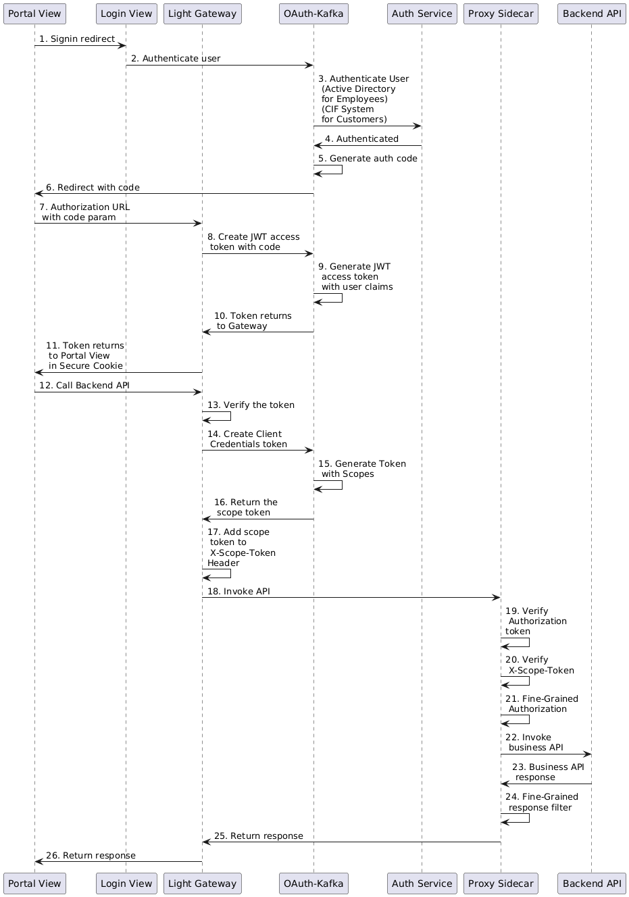

Introduction
Architecture
Design
Light Portal is an application that connect the providers to the consumers, and it contains many components or applications. Each component will have some API endpoints and a user interface in the portal view single page application.
To allow the users to understand each component in detail in term of design, we have collected all the design documents in this section.
Authentication & Authorization
Light-Portal is a single-page application (SPA) that utilizes both the OAuth 2.0 Authorization Code and Client Credentials flows.
The following pattern illustrates the end-to-end process recommended by the Light Platform for an SPA interacting with downstream APIs.
Sequence Diagram
The following is the raw data that can be used to render the diagram in http://www.plantuml.com
@startuml
participant "Portal View" as PortalView
participant "Login View" as LoginView
participant "Light Gateway" as Gateway
participant "OAuth-Kafka" as OAuthKafka
participant "Auth Service" as AuthService
participant "Proxy Sidecar" as ProxySidecar
participant "Backend API" as BackendAPI
PortalView -> LoginView: 1. Signin redirect
LoginView -> OAuthKafka: 2. Authenticate user
OAuthKafka -> AuthService: 3. Authenticate User\n (Active Directory\n for Employees)\n (CIF System\n for Customers)
AuthService -> OAuthKafka: 4. Authenticated
OAuthKafka -> OAuthKafka: 5. Generate auth code
OAuthKafka -> PortalView: 6. Redirect with code
PortalView -> Gateway: 7. Authorization URL \n with code param
Gateway -> OAuthKafka: 8. Create JWT access \n token with code
OAuthKafka -> OAuthKafka: 9. Generate JWT \n access token \n with user claims
OAuthKafka -> Gateway: 10. Token returns \n to Gateway
Gateway -> PortalView: 11. Token returns \n to Portal View \n in Secure Cookie
PortalView -> Gateway: 12. Call Backend API
Gateway -> Gateway: 13. Verify the token
Gateway -> OAuthKafka: 14. Create Client \n Credentials token
OAuthKafka -> OAuthKafka: 15. Generate Token \n with Scopes
OAuthKafka -> Gateway: 16. Return the \n scope token
Gateway -> Gateway: 17. Add scope \n token to \n X-Scope-Token \nHeader
Gateway -> ProxySidecar: 18. Invoke API
ProxySidecar -> ProxySidecar: 19. Verify \n Authorization \ntoken
ProxySidecar -> ProxySidecar: 20. Verify \n X-Scope-Token
ProxySidecar -> ProxySidecar: 21. Fine-Grained \n Authorization
ProxySidecar -> BackendAPI: 22. Invoke \n business API
BackendAPI -> ProxySidecar: 23. Business API \n response
ProxySidecar -> ProxySidecar: 24. Fine-Grained \n response filter
ProxySidecar -> Gateway: 25. Return response
Gateway -> PortalView: 26. Return response
@enduml

-
When a user visits the website to access the single-page application (SPA), the Light Gateway serves the SPA to the user's browser. By default, the user is not logged in and can only access limited site features. To unlock additional features, the user can click the User button in the header and select the Sign In menu. This action redirects the browser from the Portal View to the Login View, both served by the same Light Gateway instance.
-
On the Login View page, the user can either input a username and password or choose Google/Facebook for authentication. When the login form is submitted, the request is sent to the Light Gateway with the user's credentials. The Gateway forwards this request to the OAuth Kafka service.
-
OAuth Kafka supports multiple authenticator implementations to verify user credentials. Examples include authenticating via the Light Portal user database, Active Directory for employees, or CIF service for customers.
-
Once authentication is successfully completed, the OAuth Kafka responds with the authentication result.
-
Upon successful authentication, OAuth Kafka generates an authorization code (a UUID associated with the user's profile).
-
OAuth Kafka redirects the authorization code back to the browser at the Portal View via the Gateway.
-
Since the Portal View SPA lacks a dedicated redirect route for the authorization code, the browser sends the code as a query parameter in a request to the Gateway.
-
The
StatelessAuthHandlerin the Gateway processes this request, initiating a token request to OAuth Kafka to obtain a JWT access token. -
OAuth Kafka generates an access token containing user claims in its custom JWT claims. The authorization code is then invalidated, as it is single-use.
-
The access token is returned to the Gateway.
-
The
StatelessAuthHandlerin the Gateway stores the access token in a secure cookie and sends it back to the Portal View. -
When the Portal View SPA makes requests to backend APIs, it includes the secure cookie in the API request sent to the Gateway.
-
The
StatelessAuthHandlerin the Gateway validates the token in the secure cookie and places it in theAuthorizationheader of the outgoing request. -
If the token is successfully validated, the
TokenHandlerin the Gateway makes a request to OAuth Kafka for a client credentials token, using the path prefix of the API endpoint. -
OAuth Kafka generates a client credentials token with the appropriate scope for accessing the downstream service.
-
The client credentials token is returned to the Gateway.
-
The
TokenHandlerin the Gateway inserts this token into theX-Scope-Tokenheader of the original request. -
The Gateway routes the original request, now containing both tokens, to the downstream
proxy sidecarof the backend API. -
The proxy sidecar validates the
Authorizationtoken, verifying its signature, expiration, and other attributes. -
The proxy sidecar also validates the
X-Scope-Token, ensuring its signature, expiration, and scope are correct. -
Once both tokens are successfully validated, the proxy sidecar enforces fine-grained authorization rules based on the user's custom security profile contained in the
Authorizationtoken. -
If the fine-grained authorization checks are passed, the proxy sidecar forwards the request to the backend API.
-
The backend API processes the request and sends the full response back to the
proxy sidecar. -
The proxy sidecar applies fine-grained filters to the response, reducing the number of rows and/or columns based on the user's security profile or other policies.
-
The proxy sidecar returns the filtered response to the Gateway.
-
The Gateway forwards the response to the Portal View, allowing the SPA to render the page.
Fine-Grained Authorization
What is Fine-Grained Authorization?
Fine-grained authorization (FGA) refers to a detailed and precise control mechanism that governs access to resources based on specific attributes, roles, or rules. It's also known as fine-grained access control (FGAC). Unlike coarse-grained authorization, which applies broader access policies (e.g., "Admins can access everything"), fine-grained authorization allows for more specific policies (e.g., "Admins can access user data only if they belong to the same department and the access request is during business hours").
Key Features
- Granular Control: Policies are defined at a detailed level, considering attributes like user role, resource type, action, time, location, etc.
- Context-Aware: Takes into account dynamic conditions such as the time of request, user’s location, or other contextual factors.
- Flexible Policies: Allows the creation of complex, conditional rules tailored to the organization’s needs.
Why Do We Need Fine-Grained Authorization?
1. Enhanced Security
By limiting access based on detailed criteria, fine-grained authorization minimizes the risk of unauthorized access or data breaches.
2. Regulatory Compliance
It helps organizations comply with legal and industry-specific regulations (e.g., GDPR, HIPAA) by ensuring sensitive data is only accessible under strict conditions.
3. Minimized Attack Surface
By restricting access to only the required resources and operations, fine-grained authorization reduces the potential impact of insider threats or compromised accounts.
4. Improved User Experience
Enables personalized access based on roles and permissions, ensuring users see only what they need, which reduces confusion and improves productivity.
5. Auditing and Accountability
Detailed access logs and policy enforcement make it easier to track and audit who accessed what, when, and why, fostering better accountability.
Examples of Use Cases
- Healthcare: A doctor can only view records of patients they are treating.
- Government: A government employee can access to data and documents based on security clearance levels and job roles.
- Finance: A teller can only access transactions related to their assigned branch.
- Enterprise Software: Employees can edit documents only if they own them or have been granted editing permissions.
Fine-Grained Authorization in API Access Control
In API access control, fine-grained authorization governs how users or systems interact with specific API endpoints, actions, and data. This approach ensures that access permissions are precisely tailored to attributes, roles, and contextual factors, enabling a secure and customized API experience. As the Light Portal is a platform centered on APIs, the remainder of the design will focus on the API access control context.
Requirements
JSON Schema Registry
JSON Schema is a declarative language that provides a standardized way to describe and validate JSON data.
What it does
JSON Schema defines the structure, content, data types, and constraints of JSON documents. It's an IETF standard that helps ensure the consistency and integrity of JSON data across applications.
How it works
JSON Schema uses keywords to define data properties. A JSON Schema validator checks if JSON documents conform to the schema.
What it's useful for
- Describing existing data formats
- Validating data as part of automated testing
- Submitting client data
- Defining how a record should be organized
What is a JSON Schema Registry
The JSON Schema Registry provides a centralized service for your JSON schemas with RESTful endpoints for storing and retrieving JSON schemas.
When using data in a distributed application with many RESTful APIs, it is important to ensure that it is well-formed and structured. If data is sent without prior validation, errors may occur on the services. A schema registry provides a way to ensure that the data is validated before it is sent and validated after it is received.
A schema registry is a service used to define and confirm the structure of data that is sent between consumers and providers. In a schema registry, developers can define what the data should look like and how it should be validated. The schemas can be utilized in the OpenAPI specifications to ensure that schemas can be externalized.
Schema records can also help ensure forward and backward compatibility when changes are made to the data structure. When a schema record is used, the data transfered with more schema information that can be used to ensure that applications reading the data can interpret it.
Given the API consumers and providers can belong to different groups or organizations, it is necessary to have a centralized service to manage the schemas so that they can be shared between them. This is why we have implemented this service as part of the light-portal.
Schema Specification Version
The registry is heterogeneous registry as it can store schemas of different schema draft versions. By default the registry is configured to store schemas of Draft 2020-12. When a schema is added, the version which is currently is set, is what the schema is saved as.
The following list contains all supported specification versions.
- Draft 4
- Draft 6
- Draft 7
- 2019-09
- 2020-12
Schema Version
Once a schema is registed into the registry, it will be assigned as version 1. Each time it is updated, the version number will increase 1. When the schema is retrieve, the version number can be part of the URL to indicate that exact version will be retrieved. If version number is not in the URL, the latest version will be retrieved.